프롬프트 하나를 실험 한 번처럼
듀어 교수는 밴더빌트대 의대 생화학 교수예요. 대학원 과정의 AI 교육도 맡고 있어요. 의생명과학 박사과정 신입생에게 AI 수업을 직접 만들어 가르치고, 수업 전과 후를 쟀어요.

결과는 이랬어요. 81%가 이미 연구에 AI를 쓰고 있었어요. 그런데 AI에 지시를 제대로 쓰는 기본기를 갖춘 사람은 5%뿐이었어요. 수업을 듣고 나서는 48%가 됐어요. 쓰는 사람과 잘 쓰는 사람 사이가 그만큼 멀었다는 뜻이에요.

검색창이 아니라 실험대
듀어 교수가 가장 쓸모 있었다고 꼽은 원칙은 하나예요. 모든 프롬프트를 실험으로, 모든 답변을 실험 결과로 다루라는 거예요. 우리는 AI를 검색창처럼 써요. 묻고, 답이 그럴듯해 보이면 그대로 가져가요. 평가 기준은 '괜찮아 보이는가' 하나뿐이에요.
| 검색창처럼 쓸 때 | 실험처럼 쓸 때 | |
|---|---|---|
| 흐름 | 질문 → 답 → 그럴듯하면 씀 | 가설 → 조건 → 반복 → 검증 |
| 판단 기준 | 이 답이 괜찮아 보이는가 | 다시 해도 같은 결과인가 |
| 다루는 단위 | 질문 하나 | 실험 한 세트 |
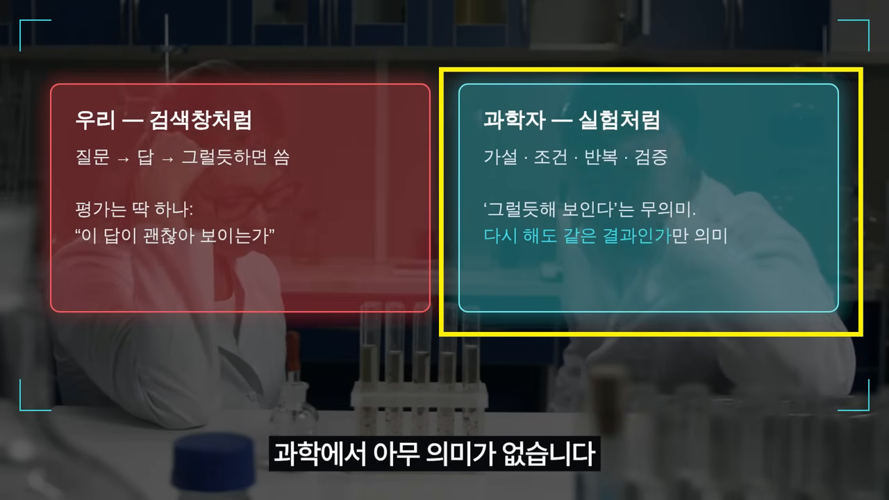
영상은 이 태도를 반증과 이어요. 내 생각이 틀렸다는 증거를 일부러 찾아보는 방식이에요. 과학이 오래 써 온 방법이고, 듀어 교수의 제안은 그걸 채팅창에 옮기라는 거예요. 아래 여덟 가지는 그 구체적인 방법이에요.
비법 1·2: 자료부터 주고, 뼈대를 세워요
비법 1. 물어보기 전에 자료부터 줘요
칼럼의 첫 문장은 AI는 자기가 닿을 수 있는 것만 가지고 생각한다는 거예요. 아무 자료 없이 "우리 업계 요즘 어때?"라고 물으면, AI는 예전에 배운 기억을 더듬어 답해요. 그 기억은 낡았을 수도 있고, 애초에 우리 업계 얘기가 아닐 수도 있어요.
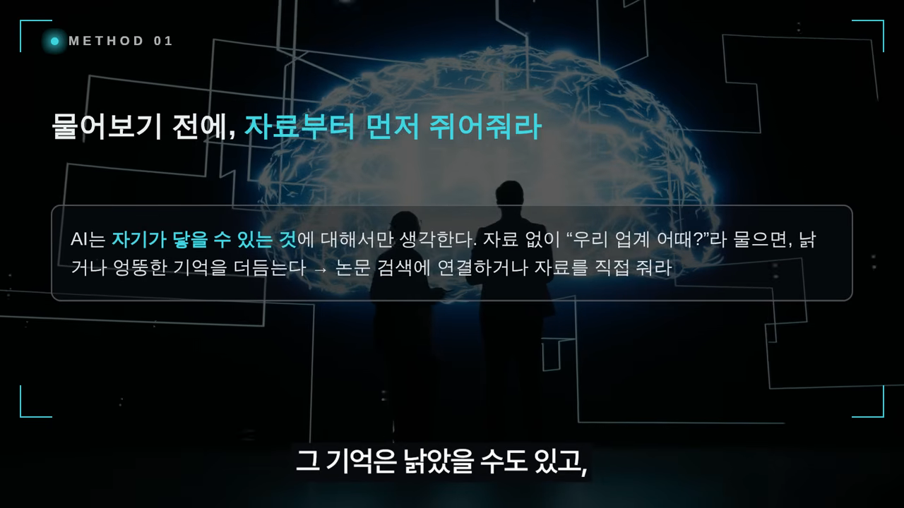
이걸 건너뛰면 생기는 일로 영상은 한 연구비 제안서 이야기를 들어요. 문장은 화려한데 핵심이 없었고, 참고문헌 대부분이 세상에 없는 논문이었다고 해요. AI는 모른다고 말하지 않아요. 대신 그럴듯한 제목을 지어내요. 이게 바로 환각이에요. 시약 없이 실험을 시작하는 연구자는 없는데, 우리는 자료 하나 없이 "회사 전략 좀 짜 줘"라고 시켜요. 영상 표현으로는 실험이 아니라 점을 보는 거예요.
비법 2. 프롬프트에 뼈대를 세워요
AI는 줄글로 뭉친 문장보다 항목이 나뉜 글을 더 정확하게 읽어요. 칼럼이 든 형식은 세 가지인데 생각보다 단순해요. 하나는 글머리표, 나머지 둘은 구역을 나누는 방식이에요.
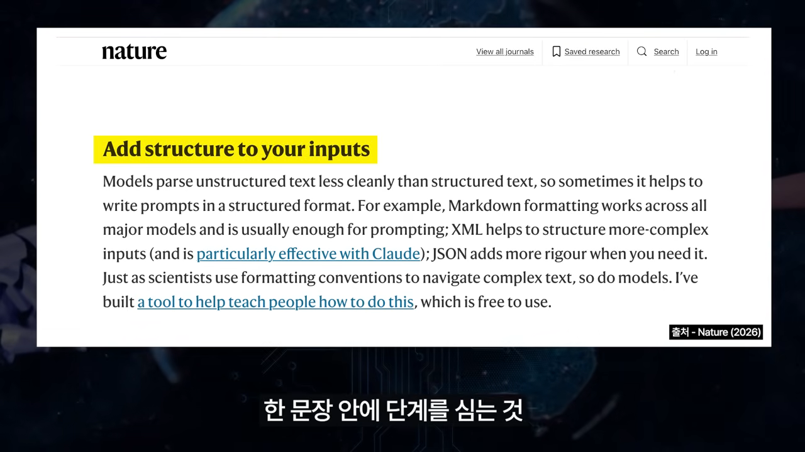
- 글머리표 — 제목을 달고 항목을 나눠 목록으로 적어요. 대부분은 이것만으로 충분해요.
- 이름표로 구역 나누기 — "여기부터 자료, 여기부터 지시"처럼 내용마다 태그를 붙여요. 서류 봉투에 라벨을 붙이는 것과 같아요.
Just as scientists use formatting conventions to navigate complex text, so do models.
과학자가 형식 규칙으로 복잡한 글을 읽어 내듯, 모델도 그래요.
— 네이처 칼럼 (이 영상 05:39 부근)
그러니까 이건 컴퓨터 기술보다 글쓰기 능력이에요. 영상은 질문 하나에 단계를 심는 예를 들어요. "A랑 B 중에 뭐가 좋아?"는 답을 받는 질문이에요. "둘 다 정리해 보고, 장단점을 뽑고, 어떤 상황에 뭐가 맞는지 제안해 줘"는 순서를 정해 일을 시키는 질문이에요.
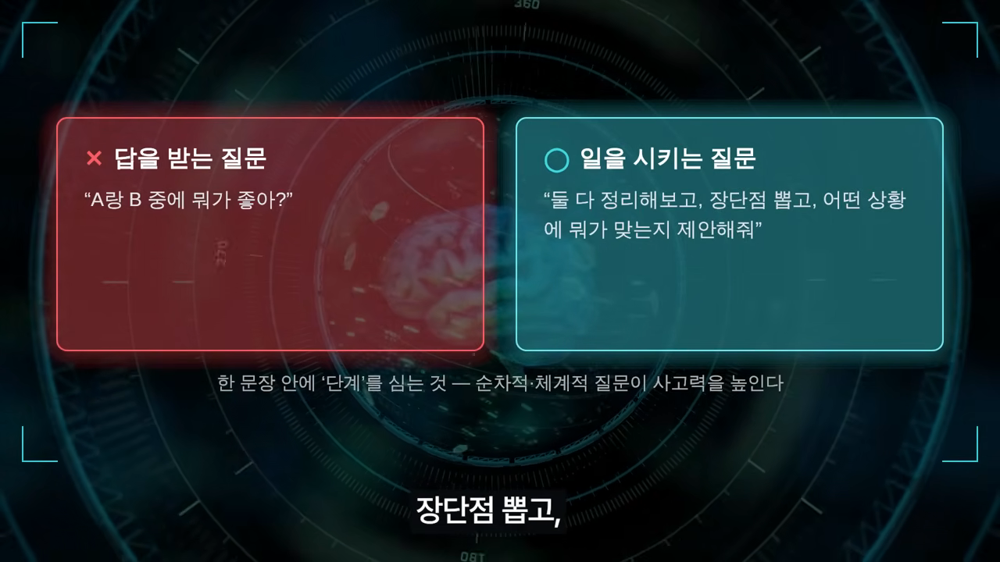
비법 3·4: 프롬프트도 AI에게 맡기고, 쌓아 둬요
비법 3. 프롬프트를 AI에게 대신 쓰게 해요
새 실험 장비를 쓸 땐 제조사 설명서부터 읽죠. 듀어 교수는 AI의 경우 그 설명서가 AI 안에 이미 들어 있다고 말해요. 좋은 프롬프트를 짜는 법을 모델이 알고 있다는 거예요. 이런 방식을 메타 프롬프팅이라고 불러요.
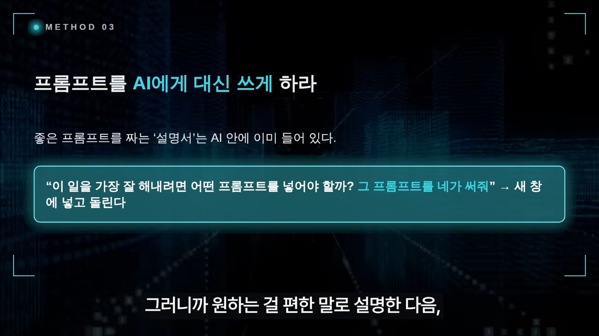
순서는 이래요. 먼저 원하는 걸 편하게 설명해요. 그다음 "이 일을 가장 잘 해내려면 어떤 프롬프트를 넣어야 할까? 그 프롬프트를 네가 써 줘"라고 부탁해요. 나온 프롬프트는 새 창에 넣고 돌려요.
비법 4. 이미 검증된 프롬프트를 다시 써요
연구자는 실험 방법을 매번 새로 발명하지 않아요. 이미 발표된 방법을 가져다 써요. 프롬프트도 같아요. 어떤 프롬프트가 잘 통하는지는 모델마다 다르고, 시간이 지나면 또 바뀌어요. 그래서 검증된 출발점이 있으면 이미 되는 걸 다시 찾는 헛수고를 아낄 수 있어요. 듀어 교수는 자기가 쓰던 프롬프트 모음을 웹사이트에 무료로 공개했어요.
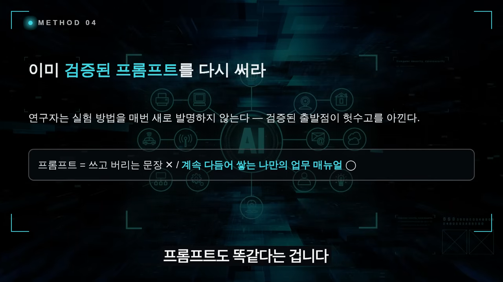
영상은 채용 이야기로 이걸 이어요. 프롬프트 엔지니어를 뽑을 때 결과물을 얼마나 빨리 냈는지보다, 과정을 어떻게 구조화했고 AI 결과의 한계를 어떻게 검증했고 어디서 사람이 궤도를 바꿨는지를 본다는 거예요. 결과가 아니라 과정, 곧 실험 노트를 보는 셈이에요. 오늘 가장 잘 됐던 프롬프트 하나를 메모장에 옮겨 두는 것부터 시작하면 돼요.
비법 5·6: 대화가 길어지면 AI가 길을 잃어요
비법 5. 대화를 짧게 끊어요
한 채팅창을 오래 붙들고 있으면 AI가 나를 더 잘 이해할 거라고 믿기 쉬워요. 대화가 쌓이니까요. 칼럼의 말은 반대예요. 채팅이라는 형식은 사람에게 편해서 있는 것뿐이에요. 대화가 길어질수록 모델의 신뢰도는 떨어지고, 이미 나온 말을 잊지도 못해요.

앞부분에서 AI가 뭔가를 잘못 알아들었다고 해 봐요. 그 오해는 지워지지 않고 남아요. 뒤에서 아무리 고쳐 줘도 계속 답변에 스며들어요. 근거로 든 연구는 라반(Laban) 등이 2025년에 낸 'LLMs Get Lost In Multi-Turn Conversation'이에요. 20만 건이 넘는 대화를 시뮬레이션했더니, 테스트한 상위 모델 모두가 여섯 개 과제에서 멀티턴 대화일 때 평균 39% 낮은 성능을 보였어요.

when LLMs take a wrong turn in a conversation, they get lost and do not recover.
모델이 대화 중 한 번 잘못 꺾으면 길을 잃고 돌아오지 못해요.
— Laban 외 논문 초록 (이 영상 09:01 부근)
해법은 단순해요. 한 창에서 실컷 논의하되, 결론이 나면 "지금까지 정리한 내용을 새 대화에 그대로 넣을 수 있게 하나로 요약해 줘"라고 시켜요. 그 요약을 들고 새 창으로 옮겨 가요.

비법 6. 망가진 대화는 고치지 말고 되돌아가요
대화는 중간에 꼬이기도 해요. AI가 지시를 무시하는 것 같거나 같은 실수를 되풀이하죠. 칼럼은 모델이 대화의 앞과 끝을 가운데보다 더 중요하게 다루기 때문이라고 설명해요. Lost in the Middle 연구가 보여 준 현상이에요. 긴 글을 넣으면 맨 앞과 맨 뒤는 잘 쓰는데, 가운데 묻힌 정보는 흘려 버려요.
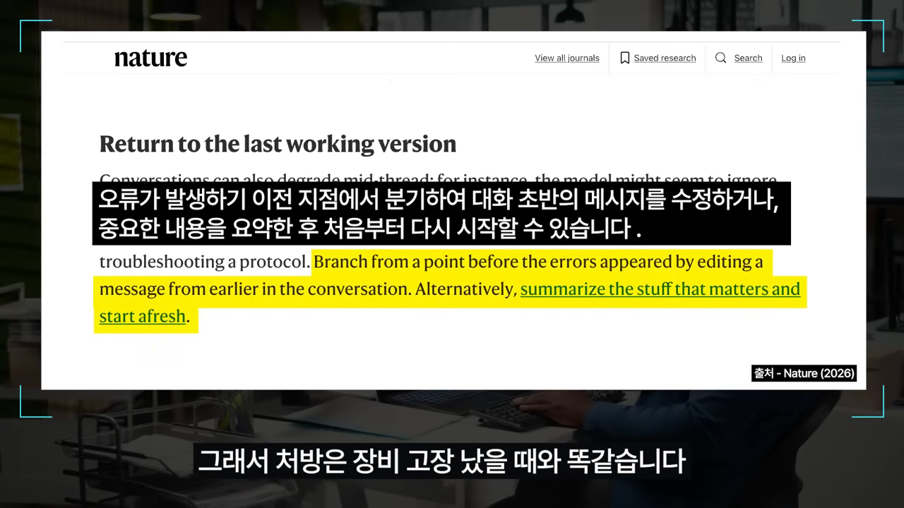
처방은 장비가 고장 났을 때와 같아요. 오류가 나기 전 메시지로 돌아가서 그걸 고쳐 다시 출발해요. 아니면 중요한 것만 요약해 아예 새로 시작해요. "아니 그게 아니라니까", "다시 해 봐"를 스무 번 주고받는 동안 대화는 더 오염돼요. 되돌아가는 쪽이 이기는 길이에요.
비법 7: 같은 질문을 여러 번 돌려요
AI는 매번 조금씩 다르게 답해요. 다음 단어를 확률적으로 골라내는 방식이라서 그래요. 어제와 오늘 답이 다른 건 고장이 아니라 원래 그런 거예요. 그래서 듀어 교수는 같은 프롬프트를 서로 다른 창에서 여러 번 돌려 보라고 해요. 실험을 여러 번 반복해 확인하는 것과 같다는 거예요.
효과는 두 가지예요. 첫째, 무엇이 단단한 결론이고 무엇이 우연히 튀어나온 소리인지 드러나요. 둘째, 빠뜨리는 게 줄어요. 여러 번 돌릴수록 나올 수 있는 답의 범위를 더 많이 보게 되니까요. 그래서 반복해 돌렸는데 새 답이 더 안 나올 때까지는 다 나왔다고 생각하지 말라고 해요.
답이 흔들린다는 것도 정보예요
신사업에 진출할지 AI에게 물었다고 해 봐요. 첫 창은 '적극 추천', 두 번째는 '조건부', 세 번째는 '하지 마세요'라고 답했어요. 첫 답이 아무리 그럴듯해도, 이 판단은 아직 믿을 만하지 않다는 중요한 정보를 얻은 거예요.
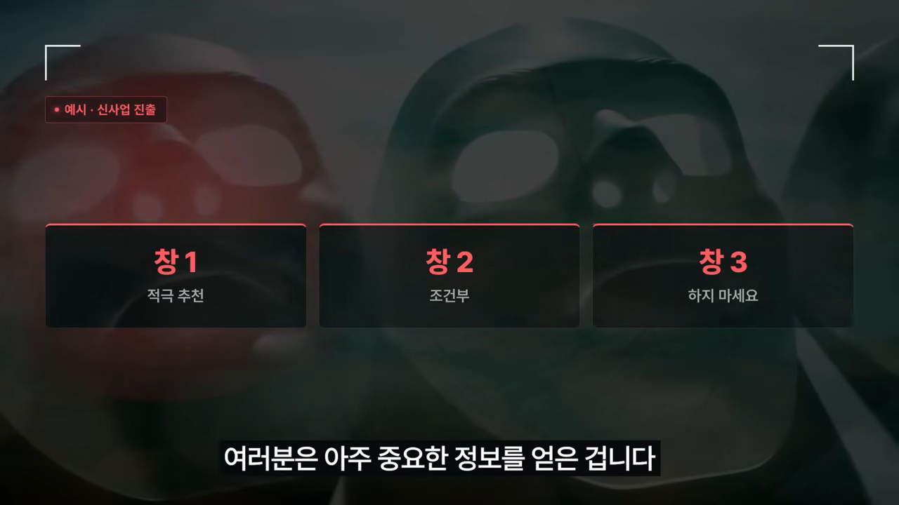
영상은 여기서 두 함정을 짚어요. "내가 해 봐서 아는데 AI는 엉터리야"라는 오만, 그리고 결정을 AI에게 통째로 맡기는 나태예요. 대신 "내 경험상 이 부분은 이상한데, 맥락과 조건을 바꿔 다시 검증해 볼까?"라고 물어야 해요. 그게 바로 칼럼이 말하는 반복 실험이에요. 오만도 나태도 결국 실험을 안 하는 거예요.
비법 8: 답을 두 개의 눈으로 확인해요
AI의 답은 두 개의 눈으로 동시에 봐야 해요. 한쪽 눈으로는 수준 높은 지적 도움으로, 다른 쪽 눈으로는 아직 확인 안 된 주장으로요.
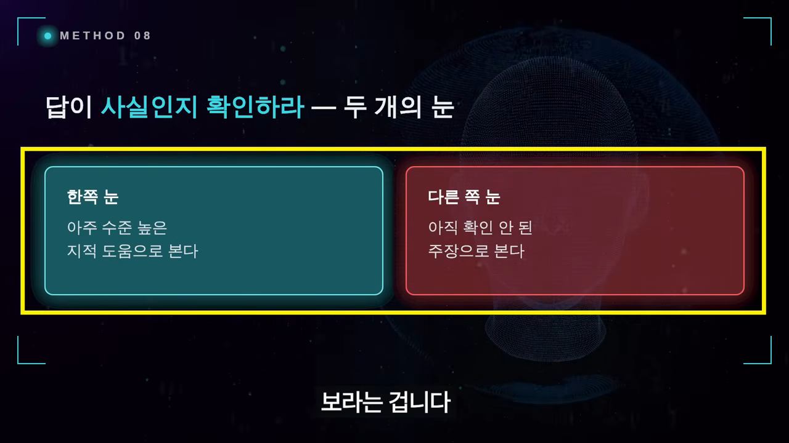
실제로는 쉽지 않아요. 보통은 "대단한데, 그대로 쓰자"나 "못 믿겠다, 안 써" 둘 중 하나로 가요. 둘 다 편한 길이에요. 영상은 2023년 마이크로소프트가 사무용 AI 도구를 내놓으며 자기 제품이 '유용하게 틀릴' 수 있다고 대놓고 말한 장면을 들어요. 틀린 결과라도 사용자가 고쳐 쓰면 출발점이 된다는 거예요.
확인은 두 번 나눠서, 다른 창에서
AI가 근거를 대며 답했다면 두 가지를 따로 물어요. 그 출처가 실제로 있는지, 그리고 그 출처가 이 주장을 정말 뒷받침하는지요. AI는 논문을 지어내기도 하고, 있는 논문을 엉뚱하게 인용하기도 해요.
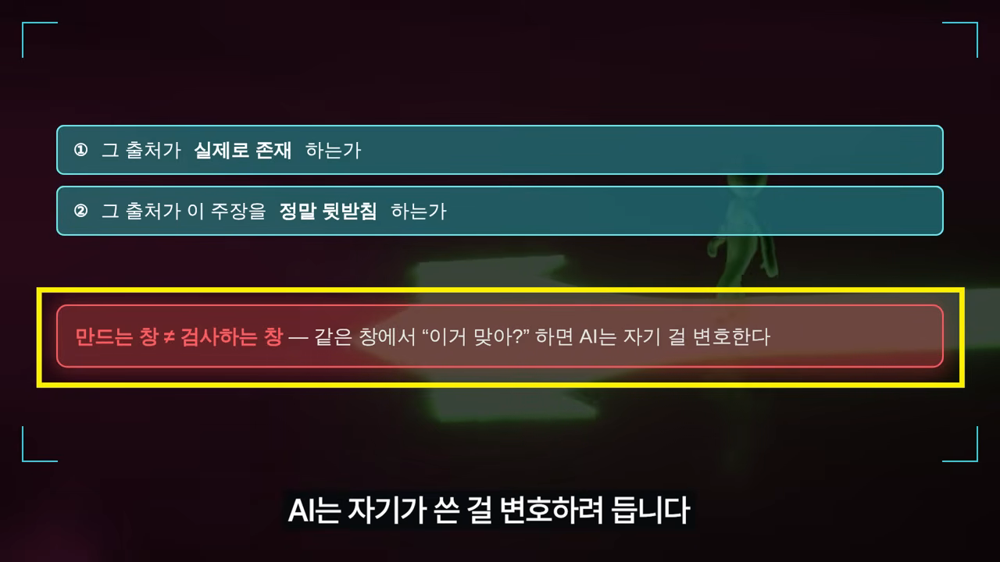
| 확인할 것 | 왜 따로 보나요 |
|---|---|
| 출처가 실제로 있는가 | AI는 없는 논문을 그럴듯하게 지어내요 |
| 출처가 그 주장을 뒷받침하는가 | 있는 논문도 엉뚱한 주장의 근거로 붙이곤 해요 |
| 어느 창에서 검사하나 | 만든 창에서 물으면 자기 답을 변호해요. 검사는 새 창에서 해요 |
사람이 닦달하면 AI는 없는 말을 지어내고, 부적절한 근거를 끌어와 비위를 맞추려 해요. 아첨이라고 부르는 성향이에요. 그래서 "내 생각이 맞는 이유를 정리해 줘"는 가장 쓸모없는 지시예요. 물으면 맞다고 해 주고, 근거까지 만들어 와요.
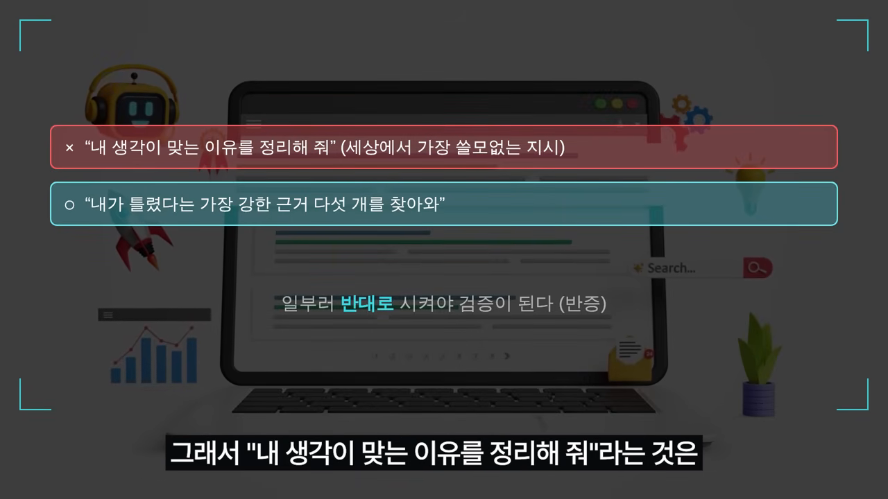
해야 할 일은 반대예요. "내가 틀렸다는 가장 강한 근거 다섯 개를 찾아와"처럼 일부러 반대 방향으로 시켜요.
결국 실험을 설계하는 능력이에요
여덟 가지를 모아 보면 하나가 분명해져요. 프롬프트를 멋있게 쓰는 기술이 아니라, 실험을 설계하는 능력이에요.
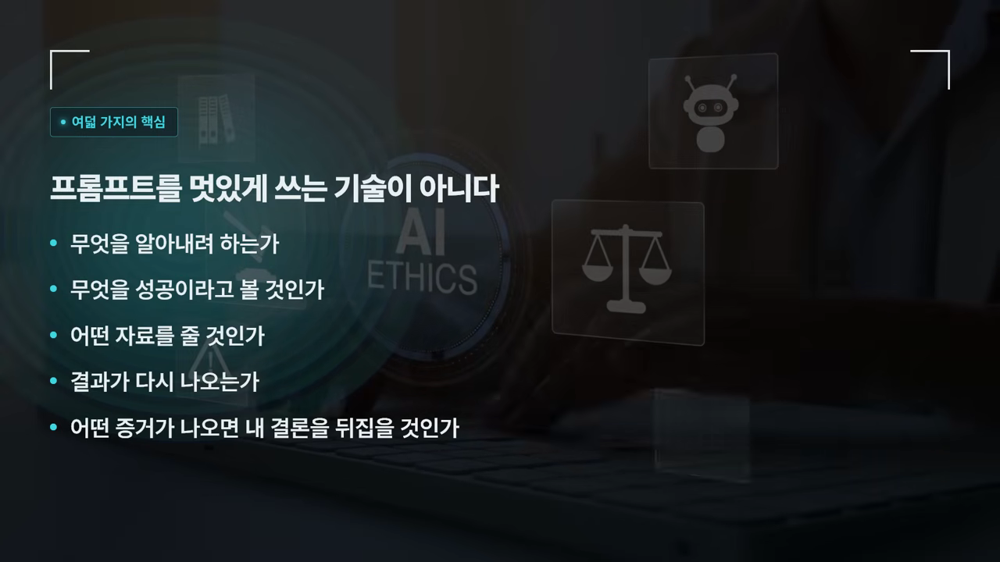
| 비법 | 실험으로 치면 | 바로 해 볼 것 |
|---|---|---|
| 1. 자료부터 주기 | 시약 준비 | 관련 문서를 먼저 붙여 넣기 |
| 2. 뼈대 세우기 | 실험 프로토콜 작성 | 목록·구역으로 나누고 단계 지정 |
| 3. 프롬프트를 AI가 쓰게 | 장비 설명서 읽기 | "이 일에 맞는 프롬프트를 써 줘" |
| 4. 검증된 프롬프트 재사용 | 발표된 방법 가져오기 | 잘 된 프롬프트를 메모해 두기 |
| 5. 대화 짧게 끊기 | 오염 전에 새 샘플로 | 요약 받아 새 창으로 |
| 6. 잘 되던 지점으로 되돌아가기 | 고장 전 상태로 복구 | 오류 전 메시지를 고쳐 다시 |
| 7. 여러 번 돌리기 | 반복 실험 | 창 여러 개에서 같은 질문 |
| 8. 사실 확인 | 결과 검증과 반증 | 출처 확인, 새 창에서 반론 요청 |
영상의 다섯 질문은 무엇을 알아내려 하는지, 무엇을 성공으로 볼지, 어떤 자료를 줄지, 결과가 다시 나오는지, 어떤 증거가 나오면 결론을 뒤집을지예요. AI가 좋아질수록 앞쪽 절반은 AI가 대신해 줄 수 있어요. 뒤쪽 절반은 대신할 수 없어요. 영상은 킹스칼리지런던의 오우즈 아자르(Oguz A. Acar) 교수의 진단도 들어요. 지금의 프롬프트 작성은 피상적이고 AI가 발전하면 쓸모없어질 수 있지만, 그 핵심인 문제 정의는 사람 몫으로 남는다는 거예요.
방법을 알면 격차가 줄어들까요?
영상이 인용한 경영학자 최동원 교수의 관찰은 반대였어요. 수업 과제에 AI를 허용했더니, 사전 지식이 있는 학생은 학부 수준을 넘는 활동을 해냈어요. 그렇지 못한 학생은 기초 내용을 소화하기도 바빴고, 그마저 AI의 환각에 빠져 허우적거렸어요. 그는 이를 빈익빈 부익부라고 불러요.
AI는 평등한 도구가 아니에요. 검증할 능력이 있는 사람에게는 증폭기가 되고, 없는 사람에게는 함정이 돼요. 81%가 쓰지만 5%만 제대로 쓴다는 듀어 교수의 숫자가 그 격차를 보여 줘요. 영상의 결론은 겸손이에요. 내가 틀릴 수 있듯 AI도 틀릴 수 있다는 걸 아는 사람만 검증을 습관으로 만들 수 있어요.
AI에게 정답을 묻지 마십시오. AI와 함께 가설을 세우고 실험하고 반박시키고 확인하십시오.
— 영상 16:57